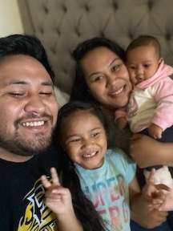

Hi Everyone!
My name is Vaeulatoifaga Gasu, I go by Vae (Vi). I am married to my handsome husband, Sefa Gasu and we have two beautiful daughters, Eirike and Leilani. I was born and raised in Long Beach, California. My little family and I recently moved to Utah. It's different from what I am used to but I love it here. I love spending time with my loved ones, traveling to new places and trying new foods. I am a stay at home momma to my baby girls. I decided to go back to school and pursue a career in Technology. It's something about it that fascinates me a lot. I've worked in Administration for 7 years, I know the basic functions but that's pretty much it. I love to be creative and I can see myself enjoying a career in this field. I know I have a lot to learn and I am prepared to work hard in my studies.
I've been a member of the church for six years. I didn't know anything about the church or mormons until I met my husband who had returned from his mission back in 2013. I was blessed to have my husband baptize me. He loves to tell everyone how we met and that he fell in love with a convert. I am truly thankful for Heavenly Father and His gospel. Becoming a member and choosing to be baptized was one of the best decisions I made.
Thank you for looking at my web page. I look forward to a great semester with you all. ☺
